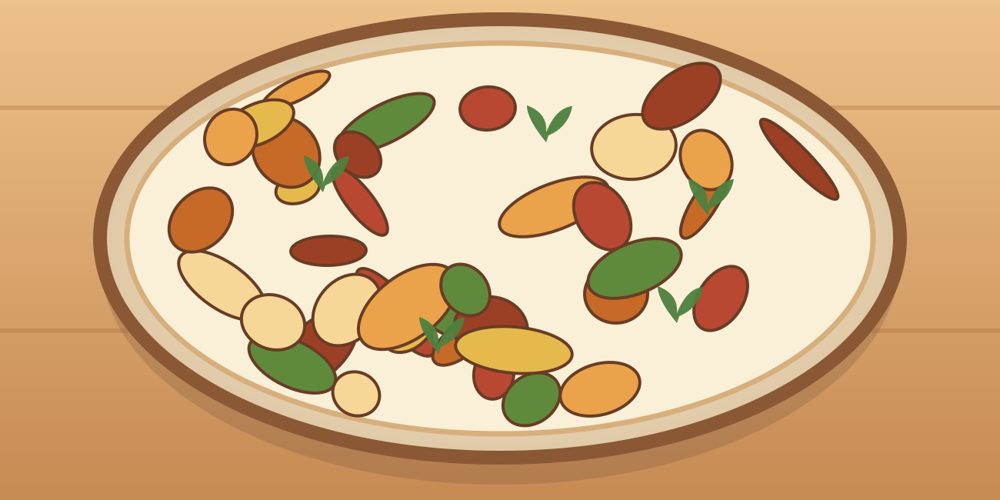

Omelette complète et potatoes
Une grosse portion maison, simple à préparer, avec des légumes et des protéines.
⏱ 25 min🍽 1 grosse portion💰 ≈ 3–4 €💪 ≈ 42 g protéines≈ 770 kcal
Ingrédients
- 3 œufs
- 90 g de jambon de dinde
- 35 g de fromage râpé
- 300 g de pommes de terre
- 80 g d’épinards
- 70 g de poivron
- 5 ml d’huile
- Paprika, poivre
Préparation
- Couper les pommes de terre en quartiers, assaisonner et cuire à l’air fryer 190 °C 18 à 22 min.
- Faire revenir le poivron dans une poêle avec l’huile 3 min, puis ajouter les épinards 1 min.
- Battre œufs, ajouter dés de jambon et fromage.
- Verser les œufs sur les légumes, cuire à feu moyen-doux 4 à 6 min jusqu’à omelette prise.
- Servir avec potatoes.
Conservation et réchauffage
Omelette meilleure fraîche ; conserver au plus 24 h au froid et réchauffer complètement.
Nutrition et prix indicatifs : à recalculer selon les marques et quantités dans MyFitnessPal. Les sauces mentionnées sont sans poisson : vérifier les étiquettes.